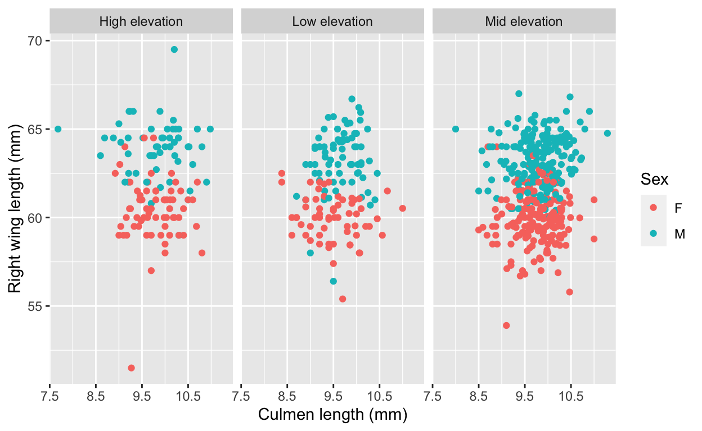
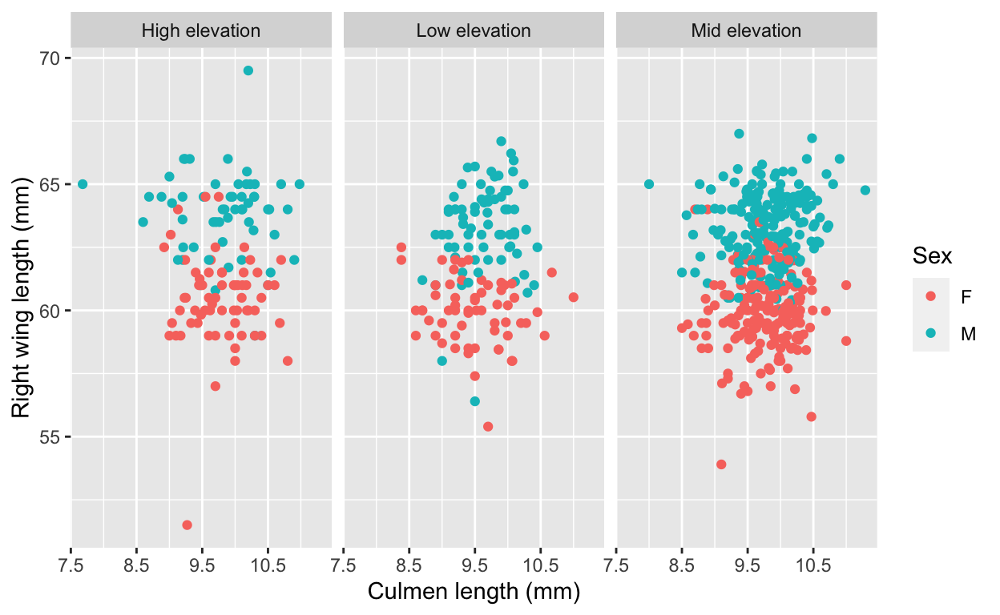
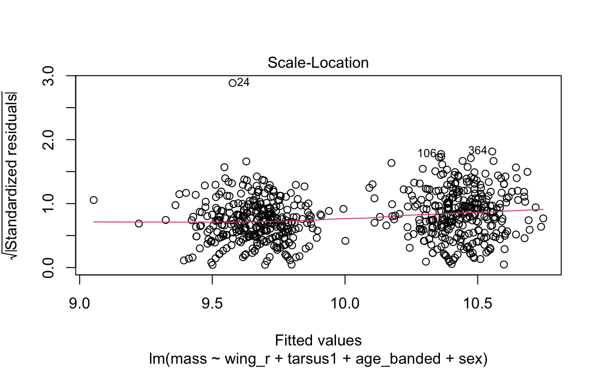
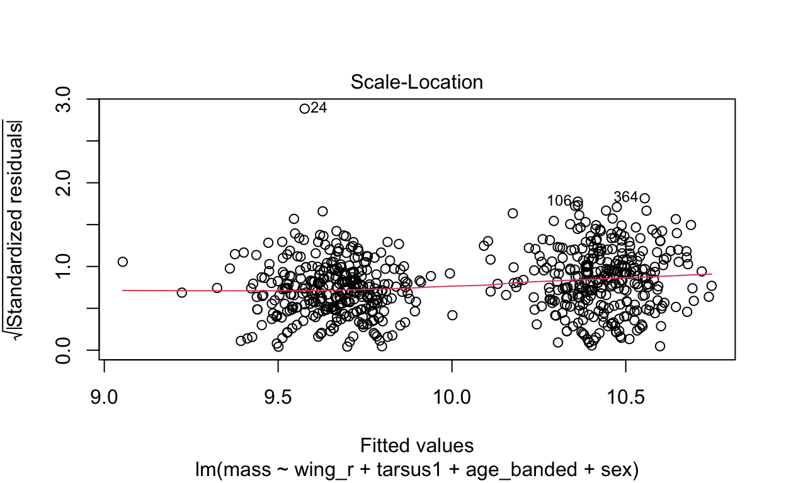
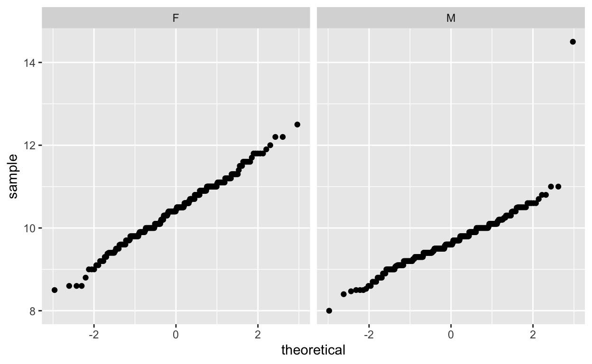

To access data, html and Rmd files:
- https://github.com/elmeraa/elmera-azadpour-206-final
- you will find the warblers data in the “exam_data” folder
- you will find the Rmd and html files in the “task_code” folder
## Read in bt_warblers.csv
warblers <- read_csv(here("_posts", "2021-09-18-black-throated-blue-warblers-visualization","bt_warblers.csv"))
Data exploration and visualization

 

## Model 1: DV is bird mass, predictor variables are: right wing length (mm), tarsus length (mm), age of bird at capture, and sex.
warblers_lm <- lm(mass ~ wing_r + tarsus1 + age_banded + sex, data = warblers_clean)
summary(warblers_lm)
Call:
lm(formula = mass ~ wing_r + tarsus1 + age_banded + sex, data = warblers_clean)
Residuals:
Min 1Q Median 3Q Max
-1.8621 -0.3485 -0.0150 0.3692 4.9237
Coefficients:
Estimate Std. Error t value Pr(>|t|)
(Intercept) 4.613330 1.118242 4.126 4.17e-05 ***
wing_r 0.073854 0.015641 4.722 2.86e-06 ***
tarsus1 0.074342 0.033644 2.210 0.0275 *
age_bandedASY -0.005195 0.138458 -0.038 0.9701
age_bandedSY 0.016213 0.135266 0.120 0.9046
sexM -1.042929 0.072653 -14.355 < 2e-16 ***
---
Signif. codes: 0 '***' 0.001 '**' 0.01 '*' 0.05 '.' 0.1 ' ' 1
Residual standard error: 0.5926 on 661 degrees of freedom
Multiple R-squared: 0.3208, Adjusted R-squared: 0.3157
F-statistic: 62.44 on 5 and 661 DF, p-value: < 2.2e-16AIC(warblers_lm) # 1202.795
[1] 1202.795vif(warblers_lm)
GVIF Df GVIF^(1/(2*Df))
wing_r 2.344573 1 1.531200
tarsus1 1.041942 1 1.020755
age_banded 1.141061 2 1.033540
sex 2.505606 1 1.582911warblers_lm
Call:
lm(formula = mass ~ wing_r + tarsus1 + age_banded + sex, data = warblers_clean)
Coefficients:
(Intercept) wing_r tarsus1 age_bandedASY
4.613330 0.073854 0.074342 -0.005195
age_bandedSY sexM
0.016213 -1.042929 warblers_lm_tidy <- tidy(warblers_lm)
warblers_lm_tidy
# A tibble: 6 x 5
term estimate std.error statistic p.value
<chr> <dbl> <dbl> <dbl> <dbl>
1 (Intercept) 4.61 1.12 4.13 4.17e- 5
2 wing_r 0.0739 0.0156 4.72 2.86e- 6
3 tarsus1 0.0743 0.0336 2.21 2.75e- 2
4 age_bandedASY -0.00520 0.138 -0.0375 9.70e- 1
5 age_bandedSY 0.0162 0.135 0.120 9.05e- 1
6 sexM -1.04 0.0727 -14.4 7.12e-41warblers_lm_fit <- glance(warblers_lm)
warblers_lm_fit
# A tibble: 1 x 12
r.squared adj.r.squared sigma statistic p.value df logLik AIC
<dbl> <dbl> <dbl> <dbl> <dbl> <dbl> <dbl> <dbl>
1 0.321 0.316 0.593 62.4 2.49e-53 5 -594. 1203.
# … with 4 more variables: BIC <dbl>, deviance <dbl>,
# df.residual <int>, nobs <int>plot(warblers_lm)
 

## Model 2: DV is bird mass, predictor variables are: tarsus length (mm), age of bird at capture, and sex.
warblers_lm2 <- lm(mass ~ tarsus1 + age_banded + sex, data = warblers_clean)
summary(warblers_lm2)
Call:
lm(formula = mass ~ tarsus1 + age_banded + sex, data = warblers_clean)
Residuals:
Min 1Q Median 3Q Max
-1.8935 -0.3683 -0.0179 0.3687 4.8730
Coefficients:
Estimate Std. Error t value Pr(>|t|)
(Intercept) 8.95060 0.64792 13.814 <2e-16 ***
tarsus1 0.08051 0.03416 2.357 0.0187 *
age_bandedASY 0.01871 0.14057 0.133 0.8942
age_bandedSY -0.02246 0.13717 -0.164 0.8700
sexM -0.78737 0.04924 -15.990 <2e-16 ***
---
Signif. codes: 0 '***' 0.001 '**' 0.01 '*' 0.05 '.' 0.1 ' ' 1
Residual standard error: 0.602 on 662 degrees of freedom
Multiple R-squared: 0.2979, Adjusted R-squared: 0.2937
F-statistic: 70.22 on 4 and 662 DF, p-value: < 2.2e-16AIC(warblers_lm2) # 1222.922
[1] 1222.922vif(warblers_lm2)
GVIF Df GVIF^(1/(2*Df))
tarsus1 1.040369 1 1.019985
age_banded 1.076407 2 1.018578
sex 1.115105 1 1.055985plot(warblers_lm2)


warblers_lm_fit2 <- glance(warblers_lm2)
## Model 3: DV is bird mass, predictor variables are: age of bird at capture, and sex.
warblers_lm3 <- lm(mass ~ age_banded + sex, data = warblers_clean)
summary(warblers_lm3)
Call:
lm(formula = mass ~ age_banded + sex, data = warblers_clean)
Residuals:
Min 1Q Median 3Q Max
-1.9179 -0.3566 -0.0179 0.3476 4.8476
Coefficients:
Estimate Std. Error t value Pr(>|t|)
(Intercept) 10.44619 0.13183 79.242 <2e-16 ***
age_bandedASY 0.01038 0.14101 0.074 0.941
age_bandedSY -0.02827 0.13762 -0.205 0.837
sexM -0.76550 0.04853 -15.775 <2e-16 ***
---
Signif. codes: 0 '***' 0.001 '**' 0.01 '*' 0.05 '.' 0.1 ' ' 1
Residual standard error: 0.6041 on 663 degrees of freedom
Multiple R-squared: 0.292, Adjusted R-squared: 0.2888
F-statistic: 91.15 on 3 and 663 DF, p-value: < 2.2e-16AIC(warblers_lm3) # 1226.497
[1] 1226.497vif(warblers_lm3)
GVIF Df GVIF^(1/(2*Df))
age_banded 1.075537 2 1.018372
sex 1.075537 1 1.037081plot(warblers_lm3)

warblers_lm_fit3 <- glance(warblers_lm3)
# Histograms
ggplot(data = warblers_clean, aes(x = mass)) +
geom_histogram(bins = 15) +
facet_wrap(~sex, scales = "free")
# QQ Plots
ggplot(data= warblers_clean, aes(sample = mass)) +
geom_qq() +
facet_wrap(~sex)

Regression table
stargazer(warblers_lm, type = "html")
| Dependent variable: | |
| mass | |
| wing_r | 0.074*** |
| (0.016) | |
| tarsus1 | 0.074** |
| (0.034) | |
| age_bandedASY | -0.005 |
| (0.138) | |
| age_bandedSY | 0.016 |
| (0.135) | |
| sexM | -1.043*** |
| (0.073) | |
| Constant | 4.613*** |
| (1.118) | |
| Observations | 667 |
| R2 | 0.321 |
| Adjusted R2 | 0.316 |
| Residual Std. Error | 0.593 (df = 661) |
| F Statistic | 62.442*** (df = 5; 661) |
| Note: | p<0.1; p<0.05; p<0.01 |
Model Selection and Justification
Model 1: DV is bird mass, predictor variables are: right wing length (mm), tarsus length (mm), age of bird at capture, and sex. (I have selected this one as the final model). Model 2: DV is bird mass, predictor variables are: tarsus length (mm), age of bird at capture, and sex. Model 3: DV is bird mass, predictor variables are: age of bird at capture, and sex.
Warblers data set is normally distributed for mass with respect to sex.
When looking at the Residual Variances, for Homoscedasticity, it appears residuals appear more randomly distributed evenly around the horizontal dotted line compared to model 2 and model 3.
Residual plots and Q-Q plots visually show that model 1 meets the homoscedasticity and normality assumptions of linear regression.
AIC score for model 1 was the lowest (1202.8) compared to model 2 (1222.92) and 3 (1226.5).
Conceptually, including predictor variables like wing length, tarsus length, age of bird capture and sex indicate a stronger correlation to bird mass (0.32). The adjusted R2 value here (0.32) indicates that 32 % of variance in body mass is explained by these variables included in the model.
Interpreting given coeffients in Model 1:
- The slope of the linear model was 0.0739 for right wing length (mm), 0.0743 for tarsus length (mm), -0.052 for age of bird at capture, -1.043 for sex, and the y-intercept was 4.613. This suggests that on average, we expect that bird body mass (g) to increase by 0.0739 grams for each 1 mm of increase in right wing length. We expect bird body mass to increase by 0.0743 grams for each 1 mm of increase in bird tarsus length.
Black-throated blue warbler data source:
- Rodenhouse, N., R. Holmes, S. Sillett, and M. Webster. 2019. Black-throated Blue Warbler capture histories, Hubbard Brook Experimental Forest, 1986 - 2010 ver 4. Environmental Data Initiative. https://doi.org/10.6073/pasta/ea985022acfdb76cd7beeaf8da6c39b1